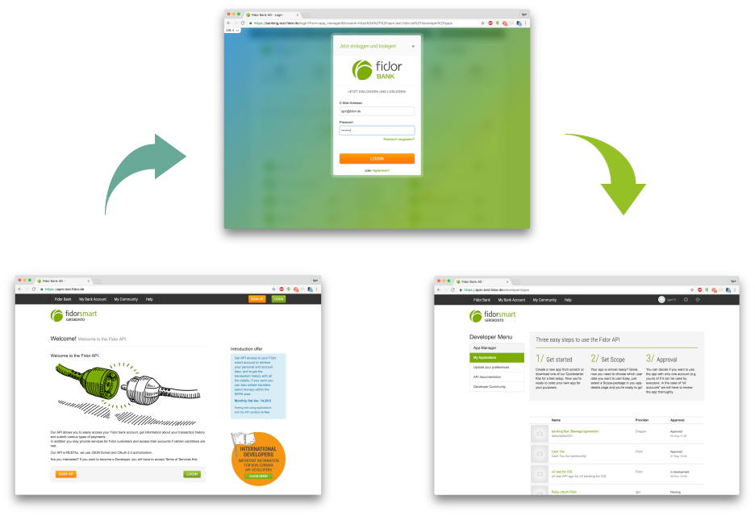
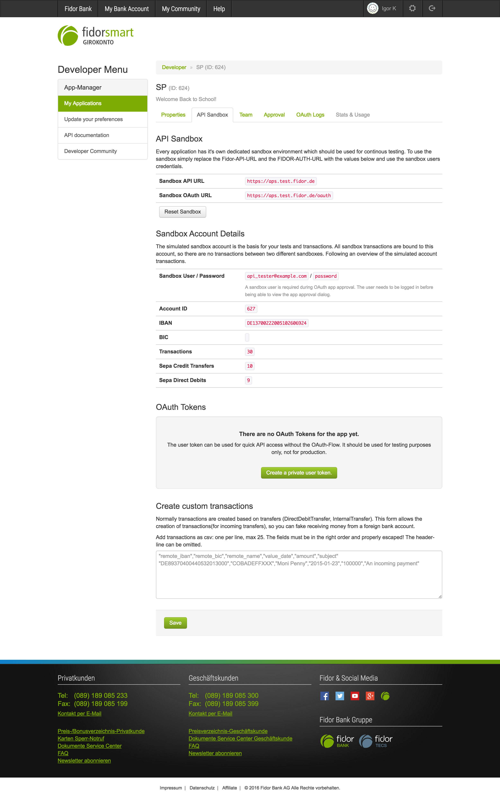
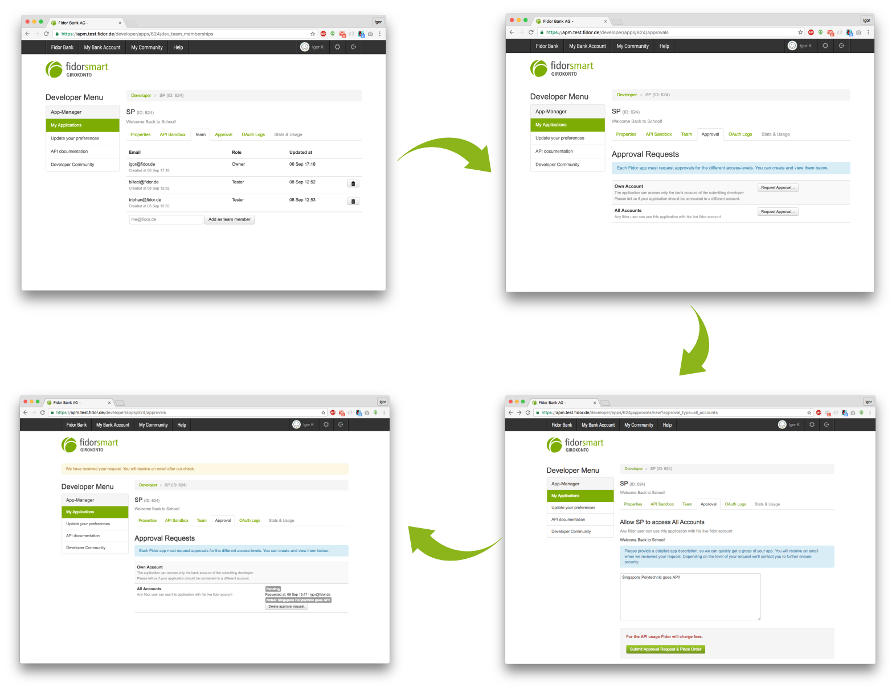
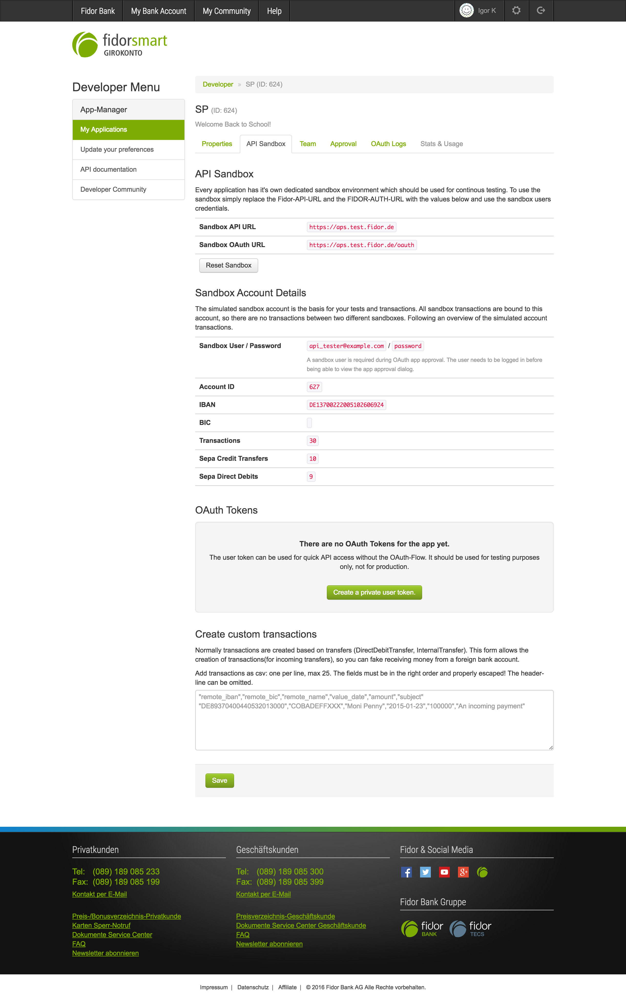
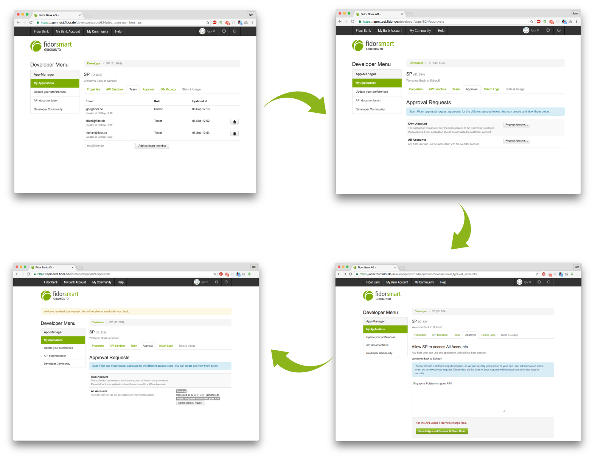

seems like a nice place to be
2 years at Fidor
was leading the API project
What's your expectation?
Agenda
Overview
Dependencies
Sandbox
Possible Scenarios
Semester Plan: API
Current Setup
Sandbox
Application Manager aka. APM
Backoffice
Banking
Community

 



Diving Deeper
Sandbox is simulating the banking
Fidor Schema
Fidor ACL
Dependencies to remove
Dependency to APM/Banking
- User Management
- App Management
- Role Management
What do you think your students need to learn?
Possible Usage Scenarios
Students can extend Sandbox by designing new APIs with JSon schemas
Students can extend Sandbox by adding new generators and routes directly in the code
Semester Plan: API I
Basics of HTTP
API Architecture Flavors
- SOAP
- REST
- Hypermedia
- WebRTC/Websockets
- Microservices
Semester Plan: API I
API Design/Documentation
- OpenAPI (Swagger)
- RAML
- API Blueprint
Assignment
- Use Fidor's API Sandbox to build your own App on top of it
- Build and deploy your own API
- Test coverage 100%
- API Documentation
Semester Plan: API II
Let's dig deeper
- Domain-Driven Design
- Event Sourcing
- CQRS (Command Query Responsibility Segregation)
Assignment
- Couldn't came up with anything in this short amount of time
Semester Plan: API - what else
GraphQL
Falcor
What to Teach
Problem Solving
Courage
Creativity